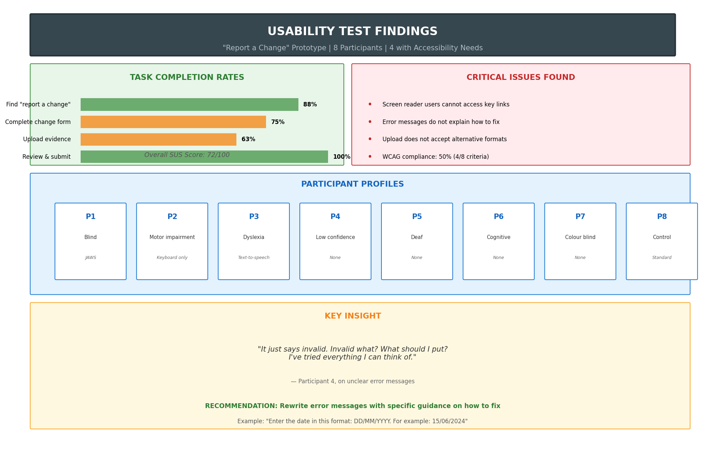

Project Overview
Context: This usability testing project evaluates a redesigned digital service for reporting changes to Universal Credit circumstances. The prototype incorporates findings from discovery research and aims to be more accessible for users with diverse needs.
Approach: GDS-aligned usability testing with a focus on accessibility and inclusive design.
Timeline: 2-week testing sprint (simulated)
Background
Why This Matters
From discovery research, we learned that:
- 40% of UC users need additional support
- Many struggle with digital services due to accessibility barriers
- Users with screen readers, motor impairments, and cognitive differences often have poor experiences
- WCAG compliance is the minimum; true inclusivity requires going further
GDS Accessibility Requirements
The Government Design Service requires all digital services to:
- Meet WCAG 2.1 AA standards as a minimum
- Work with assistive technologies (screen readers, voice control, etc.)
- Be tested with users who have access needs
- Follow inclusive design principles
Prototype Being Tested
A redesigned "report a change" service that allows UC claimants to:
- Select what type of change they need to report
- Provide details of the change
- Upload supporting evidence
- Review and submit
- Receive confirmation
Research Methodology
| Method | Purpose | Participants |
|---|---|---|
| Moderated usability testing | Observe task completion, identify issues | 8 participants |
| Cognitive walkthrough | Understand mental models and decision-making | Integrated into sessions |
| Accessibility testing | Evaluate with assistive technologies | 4 participants with access needs |
| System Usability Scale (SUS) | Quantify overall usability | All 8 participants |
Participant Profiles
| Participant | Profile | Access Needs | Assistive Technology |
|---|---|---|---|
| P1 | 34, visual impairment | Blind | Screen reader (JAWS) |
| P2 | 58, motor impairment | Difficulty using mouse | Keyboard only, voice control |
| P3 | 42, dyslexia | Reading difficulties | Text-to-speech, high contrast |
| P4 | 67, low digital confidence | Anxiety, memory issues | None (needs simple interface) |
| P5 | 29, deaf | Hearing impairment | None (visual focus) |
| P6 | 45, cognitive impairment | Processing difficulties | None (needs clear structure) |
| P7 | 52, colour blindness | Visual distinction issues | None (needs non-colour cues) |
| P8 | 38, no declared needs | Control group | Standard setup |
Results Summary

Summary of task completion rates, critical issues, and participant profiles
Task Completion Rates
| Task | Completion Rate | Average Time | Issues Found |
|---|---|---|---|
| Find "report a change" | 88% | 45 seconds | 1 critical |
| Complete change form | 75% | 4 minutes | 2 critical, 3 major |
| Upload evidence | 63% | 3 minutes | 2 critical, 2 major |
| Review and submit | 100% | 1 minute | 1 minor |
Critical Issues (Must Fix Before Release)
Issue 1: Screen Reader Users Cannot Access Key Links
Severity: Critical | Impact: Screen reader users cannot start the task
The "report a change" link was implemented as a <div> with JavaScript click handler. Screen readers did not announce it as interactive.
"I'm tabbing through but I can't find where to report a change. It says 'Manage your account' but I don't hear anything about reporting changes."
— P1 (JAWS user)
WCAG Violation: 4.1.2 Name, Role, Value (Level A)
Recommendation: Change to proper <a> or <button> element with proper ARIA labels.
Issue 2: Error Messages Do Not Explain How to Fix
Severity: Critical | Impact: Users don't know what to do when they make mistakes
P4 entered an invalid date format. Error message said "Invalid date" with no guidance on correct format.
"It just says invalid. Invalid what? What should I put? I've tried everything I can think of."
— P4 (cognitive impairment)
WCAG Violation: 3.3.1 Error Identification, 3.3.3 Error Suggestion
Recommendation: "Enter the date in this format: DD/MM/YYYY. For example: 15/06/2024"
Issue 3: Evidence Upload Does Not Accept Alternative Formats
Severity: Critical | Impact: Users without digital documents cannot complete the task
P6 had a paper letter but no scanner. Service only accepted PDF, JPG, PNG with no alternative.
"I've got the letter right here, but I don't know how to get it on the computer. Can't I just tell you what's in it?"
— P6 (cognitive impairment)
Recommendation: Add option to post evidence, request callback, or provide text description.
WCAG 2.1 AA Compliance Audit
| Criterion | Status | Notes |
|---|---|---|
| 1.1.1 Non-text Content | ❌ Fail | Upload icon has no alt text |
| 1.3.1 Info and Relationships | ❌ Fail | Progress steps not programmatically determined |
| 1.4.3 Contrast (Minimum) | ✅ Pass | All text meets 4.5:1 ratio |
| 2.1.1 Keyboard | ❌ Fail | "Report a change" not keyboard accessible |
| 2.4.3 Focus Order | ✅ Pass | Logical tab order |
| 3.3.1 Error Identification | ❌ Fail | Errors not clearly identified |
| 3.3.2 Labels or Instructions | ✅ Pass | Form fields have labels |
| 4.1.2 Name, Role, Value | ❌ Fail | Custom components lack ARIA |
Does not meet WCAG 2.1 AA standards. Critical issues must be resolved before release.
Recommendations Summary
Before Beta Release (Must Do)
- Fix keyboard/screen reader access — Change custom components to semantic HTML
- Rewrite error messages — Provide specific guidance on how to fix errors
- Add alternative evidence options — Support users who cannot upload files
- Fix alt text and ARIA labels — Ensure all non-text content is accessible
Before Live Release (Should Do)
- Improve progress indicator — Show step names and estimated time
- Simplify language — Reduce reading level to 9-11 years
- Add confirmation details — Explain what happens next and when
Nice to Have (Could Do)
- Add inline help — Contextual guidance for complex questions
- Save and return — Allow users to complete later
- Video demonstration — Show how to upload evidence
Reflection
What I Learned
- Accessibility is not a checklist — WCAG compliance is necessary but not sufficient; real user testing reveals issues automated tools miss
- Assistive technology users are expert users — They know their tools well; when they struggle, it's the service that's broken
- Error messages are critical — They can make or break the experience, especially for anxious users
- Alternative paths matter — Not everyone can use the "standard" route; inclusive design means options
Skills Demonstrated
- Usability testing planning — Designing a test with clear objectives and tasks
- Accessibility expertise — Testing with assistive technologies, WCAG knowledge
- Inclusive recruitment — Prioritising users with access needs
- Issue prioritisation — Using severity and impact to prioritise fixes
- Clear communication — Presenting findings in actionable formats
- GDS alignment — Following government usability testing standards